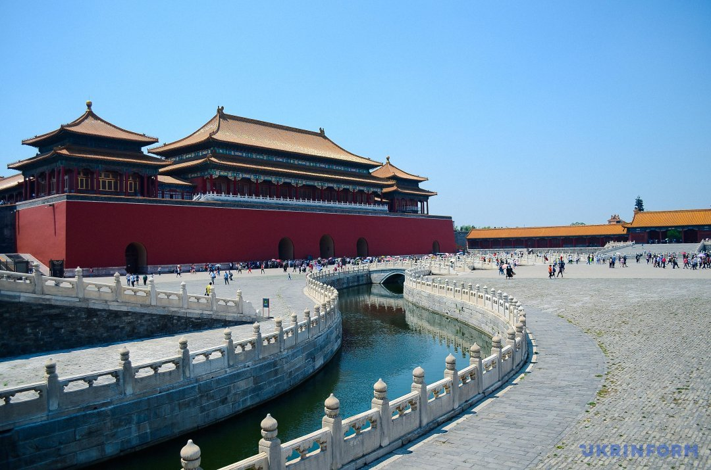
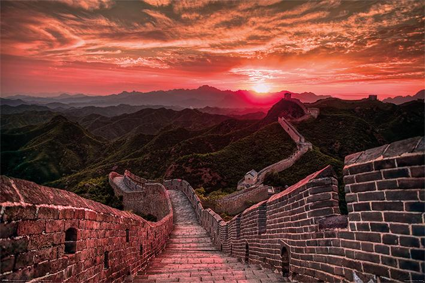
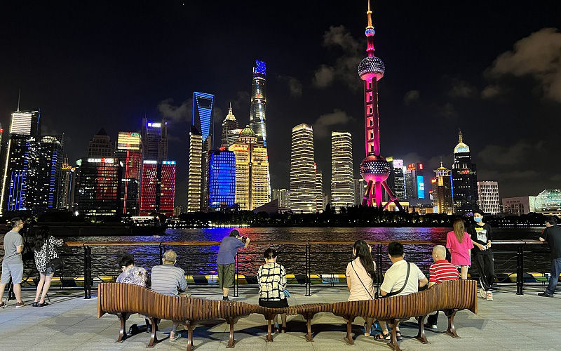
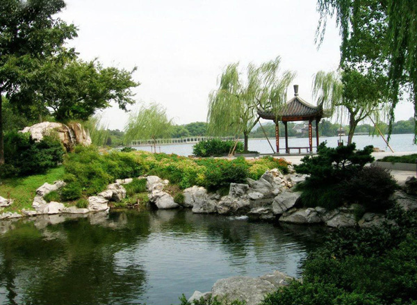

найбільш відвідуваних місць
1. Велика китайська стіна Велика китайська стіна будувалась у 1368—1644 роках за часів володарювання династії Мін. Сьогодні вона є одним з найбільш шанованих та відкриває список найбільш відвідуваних визначних пам’яток Китаю. І це не дивно, адже грандіозна стіна з урахуванням усіх відгалужень простягається на довжині 8851,8 км північним Китаєм. А на ділянці Бадалін проходить поблизу Пекіна, що дуже зручно для туристів. Китайська стіна також відома популярним щорічним легкоатлетичним марафоном, названим на честь її «Велика Стіна». Спортсмени частину дистанції пробігають гребенем Стіни – це захоплює.
2. Заборонене місто у Пекіні На даний момент Заборонене місто – найбільший палацовий комплекс у світі, його площа дорівнює 720 тис. м². З середини існування династії Мін до кінця Заборонене місто був імператорським палацом. Протягом п’яти століть він був політичним та урочистим центром китайського уряду, а також служив як будинок імператору та його сім’ї. Сьогодні він є музеєм і розташований у центрі Пекіна. У списку для відвідування він знаходиться під номером № 2, оскільки разом з Великою китайською стіною знаходиться в одному місті, що дозволяє туристам ці два місця відвідувати за одну подорож.
3. Набережна Вайтань у Шанхаї Найпопулярнішою туристичною зоною Шанхаю є знаменита набережна Вайтань. Її також називають Бунд. Існує навіть приказка, яка каже: якщо ви не відвідали Бунд, то ви не відвідували Шанхай! Щоб зберегти історичні пам’ятки в такому вигляді, висотне будівництво тут обмежене. Вайтань була одним із знімальних майданчиків для Стівена Спілберга, де знімався фільм «Імперія сонця». Це був перший у Китаї американський художній фільм, знятий після Другої світової.
4. Озеро Сіху в Ханчжоу “Західне озеро” – так перекладається Озеро Сіху. Досить часто його порівнюють із розташованим у Швейцарії Женевським озером. Женевське озеро та «Західне озеро» називають двома перлинами на Заході та Сході. На березі Сіху зростає один із відомих видів чаю Китаю – чай Лунцзін. Озеро Сіху розташоване в одному з адміністративних центрів міста Ханчжоу, яке також відоме і має давню історію. Його вік понад 2200 років. За час існування Ханчжоу був столицею двох давніх китайських династій. Він був однією з семи найдавніших китайських столиць. Ханчжоу у 13 столітті відвідав Марко Поло, відомий італійський мандрівник. У своїй книзі під назвою «Подорожі Марко Поло» Ханчжоу було названо «містом сьомого неба».
5. Теракотова армія в Сіані Назване восьмим дивом світу, армія знаходиться в гробниці Цинь Шихуандипо, китайського імператора. У ній знаходиться 8099 китайських статуй воїнів з кіньми, виконаними на повне зростання. Дане поховання було знайдено у 1974 році, поблизу міста Сіань. Армія була похована разом із Цинь Шихуанді, першим імператором Цінь. Імператор у 210-209 роках до н. е. зумів поєднати абсолютно всі ділянки Великої стіни та об’єднати Китай.



